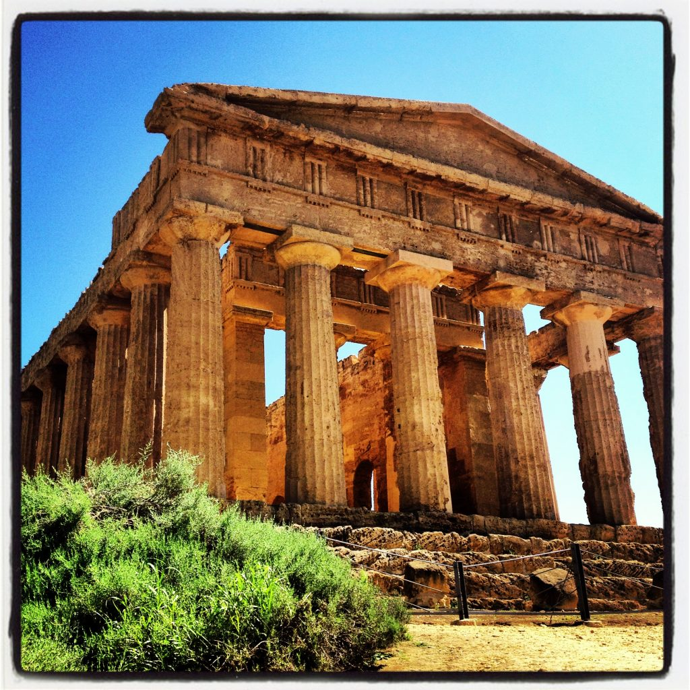

Valley of the temples near Agrigento, Sicily (photo by Francesca Tosolini)
As you know, Italy from the Inside's main focus is providing practical information for travelers to Italy. This website, as well as our guide, helps readers understand how things work in Italy, how Italians deal with specific situations and what are the difficulties travelers may encounter once they are immersed in the every day Italian life. However, it's also important for us to highlight other useful online resources that may complement the information on our site. Jen Miller's article "100 best things to do in Italy" is a list of some of the best places Italy has to offer. We think it is a good inspiration for those who are planning a trip to Italy this year (or next year) since it provides some good information. So, read on and enjoy!